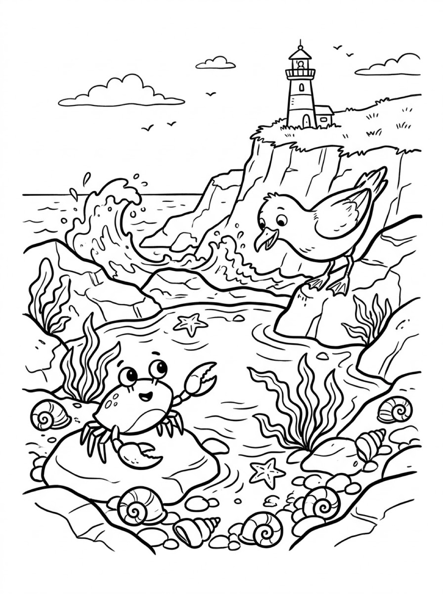
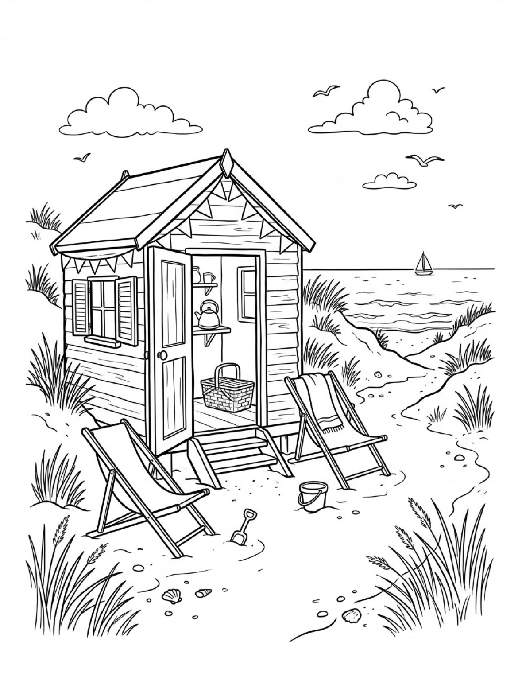

Free Beach Coloring Pages Sandcastle, Rock Pool & Beach Hut Printables
These free beach coloring pages give your child three sunny seaside scenes to color — a sandcastle under a big umbrella, a smiling crab in a rock pool, and a wooden beach hut on the dunes. Download the set below, print at home on letter-size paper, and let the coloring fun begin. No signup needed.
Last updated: October 21, 2026
Quick Answer
Yes — this page has three free printable beach coloring pages: a sandcastle with a bucket and spade under a big beach umbrella, a smiling crab and a seagull at a rock pool beneath a lighthouse, and a wooden beach hut with deckchairs on the dunes. Bold outlines and big spaces, made for little hands. Download, print on letter-size paper, and hand over the crayons — no signup, no cost.
At a Glance
- Ages: 3–8
- Pages: 3 free printables
- Format: Print at home, letter size
- Cost: Free, no signup
- Supplies: Crayons or markers
- Time: 10–20 minutes
🏖️ Sandcastle and Umbrella Coloring Page

🎨 Download Your Free Sandcastle Coloring Page
A tall sandcastle with a flag on top, a bucket and spade beside it, and a big beach umbrella shading the sand — bold outlines, big spaces, zero signup.
⬇️ Download Free Sandcastle Page 🖨️ Print Sandcastle Page🎁 Free printable for preschoolers & kids
🦀 Rock Pool Crab and Seagull Coloring Page

🎨 Download Your Free Rock Pool Coloring Page
A smiling crab waving from its rock while a seagull watches, with starfish, shells and seaweed in the pool and a lighthouse on the cliff — bold outlines, big spaces, zero signup.
⬇️ Download Free Rock Pool Page 🖨️ Print Rock Pool Page🎁 Free printable for preschoolers & kids
🛖 Beach Hut on the Dunes Coloring Page

🎨 Download Your Free Beach Hut Coloring Page
A wooden beach hut with its door open to a picnic basket and kettle, two deckchairs waiting outside and bunting strung across the roof — bold outlines, big spaces, zero signup.
⬇️ Download Free Beach Hut Page 🖨️ Print Beach Hut Page🎁 Free printable for preschoolers & kids
More Coloring Pages
Tap any picture to open its theme page and download the free printable.


🏖️ How To Use This Page
- Browse the three designs and pick the beach scene your child will love most.
- Tap download or print under that design — the file opens full-size, ready for letter-size paper.
- Print a couple of copies so your child can try the same scene with a different-colored sea.
- Color together with crayons or markers and display the favorites.
🏖️ Why Kids Love Beach Coloring Pages
The beach is where summer happens, and coloring one brings the day back — or builds the excitement before a trip. Each scene on this page has its own mood: the busy sandcastle shore, the quiet rock pool full of creatures, and the cozy hut where the picnic is waiting. Kids get to decide everything: the stripes on the umbrella, the color of the sea, even what pattern goes on the beach hut's bunting.
That freedom is what makes beach pages so repeatable. Print the same design twice and it never comes out the same — the sea can be turquoise on Monday and deep blue on Friday. Kids practice grip, pressure and color planning while they work, and because every version is “right,” there is no frustration when a crayon slips outside the lines.
🌊 Meet the Three Beach Scenes on This Page
The sandcastle under the umbrella. A tall sandcastle with towers and a flag on top stands in the shade of a big beach umbrella, a bucket and spade ready beside it. Shells, a spotted starfish and a tiny crab scatter across the sand in front, gentle waves roll in behind, and a little sailboat crosses the horizon under the sun. The umbrella panels and the castle are big, bold shapes, which makes this the best starting page for younger colorers, while the shells give older kids small details to finish.
The rock pool at low tide. A smiling crab waves one claw from the top of its rock while a seagull leans in from a rock of its own to watch. Two starfish and a scatter of spiral shells rest in the shallow pool between clumps of seaweed, a wave splashes against the rocks, and a lighthouse stands on the cliff above it all. This is the character page of the set — the crab and the gull have a story, and kids love deciding what it is.
The beach hut on the dunes. A wooden hut sits in the dune grass with its door wide open: inside you can spot a picnic basket on the floor and a kettle and cups on the shelves. Two deckchairs — one with a towel draped over it — wait outside, a bucket and spade rest in the sand, and bunting is strung across the front of the roof. A grassy path winds down to the sea, where a sailboat drifts on the horizon. The planks, bunting triangles and dune grass make this the most detailed page, and careful colorers spend the longest on it.
✏️ Beach Coloring Tips
- Stripe the big shapes. The umbrella panels and the beach hut's bunting triangles are made for alternating colors — pick two or three and repeat the pattern all the way across.
- Use two blues for the water. A light blue for the rock pool and shallow waves, a darker blue for the open sea, and the whole scene suddenly has near and far.
- Count the shells as you go. The sandcastle page hides shells, a starfish and one very small crab — a natural counting game for little colorers: how many can your child find?
- Give the sand some texture. A pale yellow base with a few darker dots and dashes turns flat sand into a real beach, and the castle's speckled walls are already started for you.
🏖️ Coloring Pages for Different Ages
For ages 3 to 4, start with the sandcastle. The umbrella, the castle and the starfish are big central shapes with bold outlines, so little hands can color the main picture without worrying about the background. Scribbling is fine at this age — they are learning how crayons move across the page and how hard to press.
For ages 5 to 6, the rock pool is the sweet spot. The crab and the seagull are still big, friendly shapes, but the shells, starfish and seaweed add real choices: which shells get stripes, what color is the crab, and how splashy is the wave?
For ages 7 to 8, hand over the beach hut. It carries the most detail — hut planks, bunting, deckchair frames, dune grass and the little picnic things inside the door — and rewards careful coloring and patience. Older kids often spend the longest on this one.
🐚 More Beach Fun After Coloring
After coloring, ask your child to tell you the scene's story. What is the crab saying to the seagull? Who is coming to sit in the deckchairs? Write their answers on the back of the page (or let them dictate while you write) and the sheet becomes a keepsake instead of a throwaway.
Keep the seaside going with the turtle coloring pages — the baby turtle there hatches on a beach just like these — or swap seasons entirely with the house coloring pages, where a lighthouse cottage watches over the same kind of shore.
🔗 More Free Printables You’ll Love
- Free Turtle Coloring Pages A sea turtle over a reef, a garden tortoise, and a baby turtle hatching on the sand.
- Free House Coloring Pages A thatched cottage, a treehouse, and a lighthouse keeper's cottage to color.
- Free Winter Coloring Pages The opposite season: a snowman with a lantern, a sled ride, and ice skating.
- All Free Coloring Pages Browse every free coloring page on the site, organized by theme.
❓ Beach Coloring Pages FAQ
Are these beach coloring pages really free?
Yes — all three designs on this page are free original printables from MomYouNeedThis. Download them, print them at home, and color — no signup and no cost.
What ages are these coloring pages best for?
Kids ages 3 to 8 get the most from this set. Younger children can start with the big sandcastle under the umbrella and color the main shapes, while older kids enjoy the detailed rock pool creatures and the beach hut scene.
How do I print a coloring page?
Tap the download button under the design you want, then print the file on regular letter-size paper. The print button opens the full-size page in a new tab if you prefer to print from there.
Which of these beach coloring pages is easiest for toddlers?
The sandcastle design. The umbrella, castle and starfish are big, simple shapes with plenty of room for little hands, and there are only a few small details to leave for later.
Can I make a coloring book from these pages?
Yes — print all three designs, stack them in order, and staple along the left edge. Add a cover sheet with your child's name on it for a finished homemade beach coloring book.